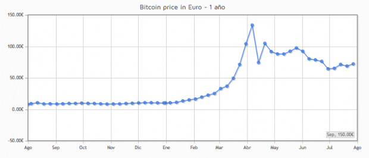

Bitcoin
Bitcoin es una moneda virtual e intangible. Es decir, que no se puede tocar en ninguna de sus formas como ocurre con las monedas o billetes, pero puede utilizarse como medio de pago de la misma forma que éstos.
Al igual que ocurre con el dinero que tenemos en nuestro banco los Bitcoin aumentan o disminuyen de nuestra cuenta personal según realicemos ingresos o gastos, la única diferencia es que no existe la posibilidad de monetizarlos, como ocurre cuando, por ejemplo, retiramos dinero de un cajero automático
¿CUÁLES SON LAS PECULIARIDADES QUE HACEN DIFERENTE A BITCOIN?
Sin lugar a dudas lo que hace distinto a Bitcoin frente a las monedas tradicionales y otros medios de pago virtual como Amazon Coins, es la descentralización. O lo que es lo mismo, Bitcoin está fuera del control de cualquier gobierno, institución o entidad financiera, ya sea de tipo estatal o privado, como pueden ser el euro, controlado por el Banco Central Europeo o el Dólar por la Reserva Federal de los EEUU.
En Bitcoin el control lo realizan, de forma indirecta mediante sus transacciones, los propios usuarios a través de los intercambios P2P (Peer to Peer o Punto a Punto). Esta estructura P2P y la falta de control imposibilita que cualquier autoridad manipule su valor o provoque inflación produciendo más cantidad.
De hecho, su producción y valor se basa en la ley de la oferta y la demanda. Otro detalle interesante es que Bitcoin tiene un limite fijado de 21 millones de monedas, que se alcanzará en 2030.

¿CUÁNTO VALE UN BITCOIN?
Como hemos indicado el valor de Bitcoin se basa en la oferta y la demanda, y se calcula mediante un algoritmo que mide la cantidad de movimientos y transacciones con Bitcoin en tiempo real.
Actualmente el precio del Bitcoin se sitúa, euro arriba o abajo, entorno a los 475 euros (a 13 de febrero de 2014), aunque este valor no es ni mucho menos estable ya que Bitcoin está catalogada como la moneda más inestable del mercado de divisas.
Por ejemplo, analizando el periodo comprendido entre agosto de 2012 y agosto de 2013, alcanzó un valor tope de 134 euros en abril de 2013 pese a que a principios de febrero su valor se situaba en torno a sólo 16 euros.
De hecho, su valor se ha incrementa un 600% en los tres primeros meses del año 2013. Detalles por los cuales muchos expertos piensan que estamos ante una tremenda burbuja llena de especuladores que, tarde o temprano, terminará por explotar.